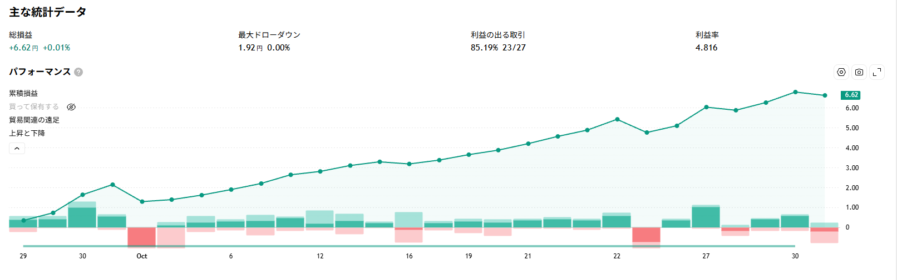

総損益
+6.79 円
建玉中も含めると +6.62 円
利益率（PF）
4.820
建玉中も含めると 4.400
勝率
85.2%
23 勝 / 27 取引
最大ドローダウン
1.92 円
含み損も数えた谷
取得日時 2026-10-31 08:50 JST（集計期間 2026-09-29 〜 2026-10-30）
数字はすべて TradingView の取引一覧から計算したものです。画面に出ていた数字は下の画像で見比べられます。
ChartArt「Bollinger + RSI, Double Strategy」v1.1 の日本語表示版。ロジックは原本と同じで、矢印を「買い／売り」表示にして評価損益を円で出すようにしたもの。アラート2本（1時間足・3分足）が稼働中。
戦略レポート（主な統計データと累積損益カーブ）

トレード履歴
全 28 件（新しい順）
| # | 方向 | エントリー | 決済 | 損益(円) | 累積(円) |
|---|---|---|---|---|---|
| 28 | 買 | 10/30 06:39 157.668 | 建玉中 （未決済） | -0.17 | +6.62 |
| 27 | 売 | 10/29 00:36 158.199 | 10/30 06:39 157.668 | +0.53 | +6.79 |
| 26 | 買 | 10/28 14:54 157.816 | 10/29 00:36 158.199 | +0.38 | +6.26 |
| 25 | 売 | 10/27 11:00 157.659 | 10/28 14:54 157.816 | -0.16 | +5.88 |
| 24 | 買 | 10/26 11:48 156.721 | 10/27 11:00 157.659 | +0.94 | +6.03 |
| 23 | 売 | 10/26 10:03 157.057 | 10/26 11:48 156.721 | +0.34 | +5.09 |
| 22 | 買 | 10/22 13:45 157.719 | 10/26 10:03 157.057 | -0.66 | +4.76 |
| 21 | 売 | 10/22 04:18 158.26 | 10/22 13:45 157.719 | +0.54 | +5.42 |
| 20 | 買 | 10/21 21:48 157.942 | 10/22 04:18 158.26 | +0.32 | +4.88 |
| 19 | 売 | 10/21 10:09 158.307 | 10/21 21:48 157.942 | +0.37 | +4.56 |
| 18 | 買 | 10/20 23:48 157.983 | 10/21 10:09 158.307 | +0.32 | +4.20 |
| 17 | 売 | 10/19 19:18 158.21 | 10/20 23:48 157.983 | +0.23 | +3.87 |
| 16 | 買 | 10/16 13:09 157.935 | 10/19 19:18 158.21 | +0.28 | +3.65 |
| 15 | 売 | 10/16 00:42 158.126 | 10/16 13:09 157.935 | +0.19 | +3.37 |
| 14 | 買 | 10/14 12:45 158.234 | 10/16 00:42 158.126 | -0.11 | +3.18 |
| 13 | 売 | 10/14 10:36 158.423 | 10/14 12:45 158.234 | +0.19 | +3.29 |
| 12 | 買 | 10/12 10:18 158.128 | 10/14 10:36 158.423 | +0.30 | +3.10 |
| 11 | 売 | 10/09 01:09 158.297 | 10/12 10:18 158.128 | +0.17 | +2.80 |
| 10 | 買 | 10/08 10:06 157.858 | 10/09 01:09 158.297 | +0.44 | +2.63 |
| 9 | 売 | 10/06 15:45 158.16 | 10/08 10:06 157.858 | +0.30 | +2.19 |
| 8 | 買 | 10/06 06:57 157.879 | 10/06 15:45 158.16 | +0.28 | +1.89 |
| 7 | 売 | 10/05 13:54 158.103 | 10/06 06:57 157.879 | +0.22 | +1.61 |
| 6 | 買 | 10/01 21:24 158.003 | 10/05 13:54 158.103 | +0.10 | +1.39 |
| 5 | 売 | 10/01 00:30 157.151 | 10/01 21:24 158.003 | -0.85 | +1.29 |
| 4 | 買 | 09/30 12:15 156.644 | 10/01 00:30 157.151 | +0.51 | +2.14 |
| 3 | 売 | 09/30 00:36 157.553 | 09/30 12:15 156.644 | +0.91 | +1.63 |
| 2 | 買 | 09/29 21:21 157.169 | 09/30 00:36 157.553 | +0.38 | +0.72 |
| 1 | 売 | 09/29 14:09 157.509 | 09/29 21:21 157.169 | +0.34 | +0.34 |
⚠️ 数字を読むときの注意
- 取得日時は 2026-10-31 08:50 JST。TradingView の Essential プランはさかのぼれる期間が日ごとにずれるため、後日まったく同じ操作をしても集計期間と数字が変わります。過去の記録と比べるときは必ずこの日時を見てください
- TradingView の画面に出る「利益率」は建玉中の評価損益を含みません。この時点では建玉中が -0.17 円あり、含めると利益率は 4.820 → 4.400 になります
- 表の損益はスプレッドや実際の約定ズレを含みません。実口座の成績とは一致しません
- 最大ドローダウンは、決済ごとの累積損益に加えて保有中の含み損も谷として数えています。TradingView の表示と計算の土俵が違うことがあります
- この戦略は5分足6年の独立検証では利益率 0.924（ランダムに入った場合より悪い）でした。ここに出ている短期の高い利益率は、期間の取り方で出ることがあります
- 3分足は長期の裏取りができません（手持ちの検証データは最短5分足）
日付の一覧
TradingView の戦略テスターから自動で作っています。取引一覧の原本（CSV）は非公開の保管用リポジトリにあります。